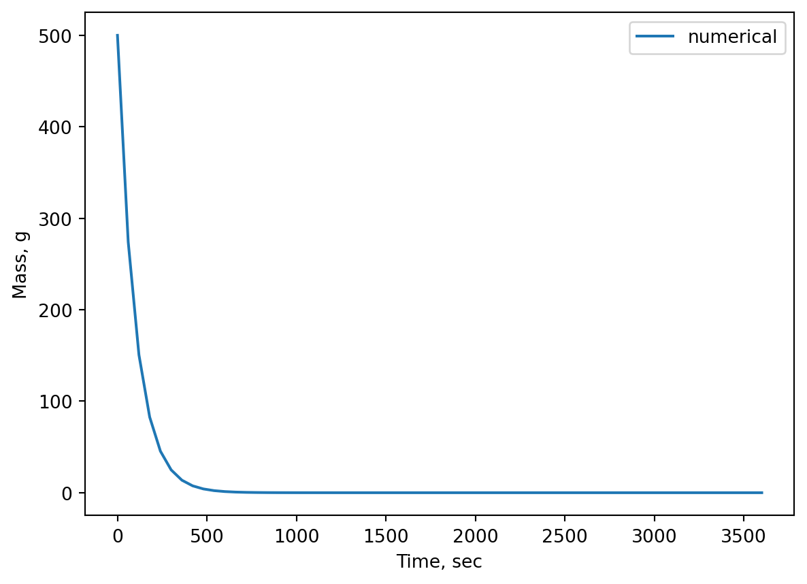
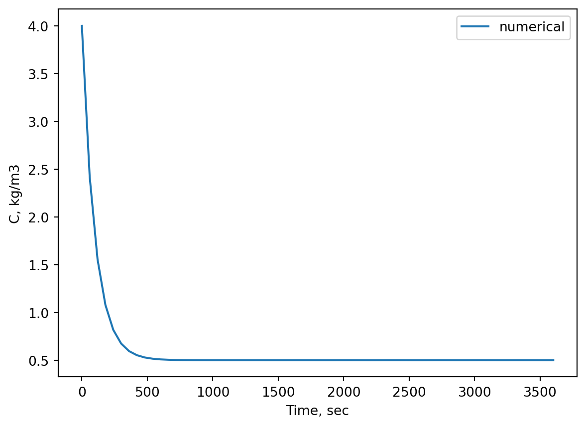
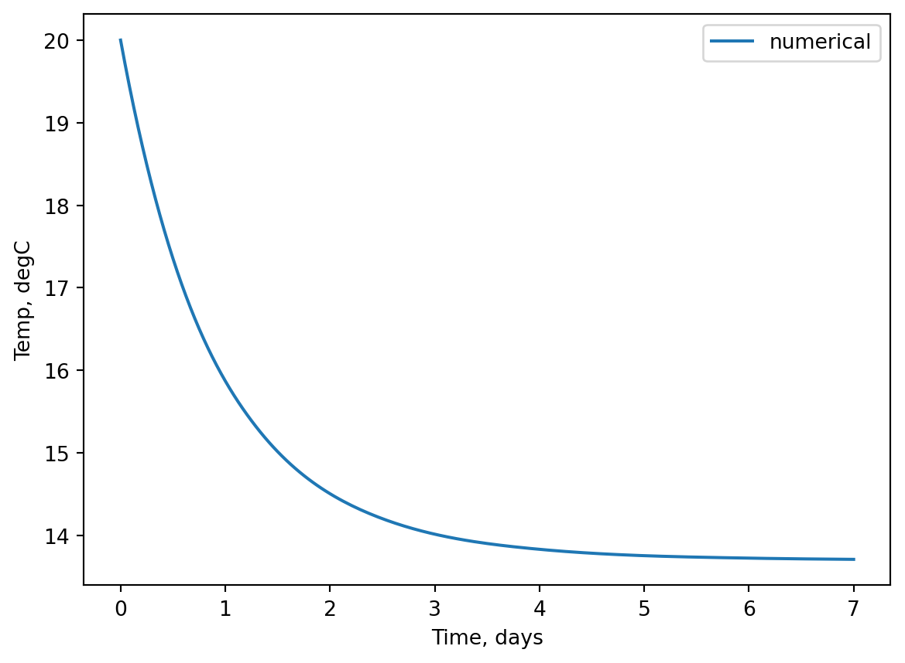
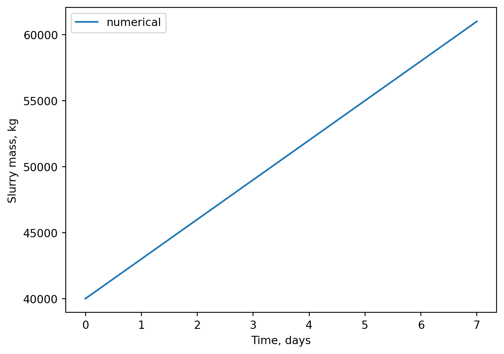

"""
File: evap_mods
Authors: Frederik R. Dalby and Sasha D. Hafner
Course: Modelling 2026
Description:
A module with a two function (analytical and numerical)
models for evaporation of gasoline.
"""
import numpy as np
from scipy.integrate import solve_ivp
def evap(k, M_init, time_range, dt):
"""
Simulate evaporation of gasoline from puddle with an analytical model.
Parameters
----------
k: float
mass transfer coefficient (1/sec)
M_init : float
Initial mass of gasoline spilled (g)
time_range: tupple
tupple with start and end simulation times (sec)
dt: float
time step in solution (sec)
Returns
-------
dict with keys 'times' (s) and 'M' (g)
"""
times = np.arange(time_range[0], time_range[-1] + dt, dt)
M = M_init * np.exp(- k * times)
return{
'times': times,
'M': M,
}
def evap_num(k, M_init, time_range, dt):
"""
Simulate evaporation of gasoline from puddle with a numerical model.
Parameters
----------
k: float
mass transfer coefficient (1/sec)
M_init : float
Initial mass of gasoline spilled (g)
time_range: tupple
tupple with start and end simulation times (sec)
dt: float
time step in solution (sec)
Returns
-------
dict with keys 'times' (s) and 'M' (g)
"""
times = np.arange(time_range[0], time_range[-1] + dt, dt)
def rates(t, M):
return - k * M
res = solve_ivp(rates,
t_span = [time_range[0], time_range[-1]],
y0 = [M_init],
t_eval = times)
return{
'times': res.t,
'M': res.y[0,:],
}solutions
Evaporation problem model functions file
Evaporation problem call model function file
"""
File: evap_pred.py
Authors: Frederik R. Dalby and Sasha D. Hafner
Course: Modelling 2026
Description:
Application of the `evap()` and `evap_num()` model functions.
"""
import matplotlib.pyplot as plt
import evap_mods as ev
preds = ev.evap(
k=0.01,
M_init=500,
time_range=(0., 60 * 60),
dt = 60
)
print(preds)
plt.plot(preds['times'], preds['M'], label = "analytical")
plt.ylabel('Mass, g')
plt.xlabel('Time, sec')
plt.legend()
plt.show()
preds_num = ev.evap_num(
k=0.01,
M_init=500,
time_range=(0., 60 * 60),
dt = 60
)
print(preds_num)
plt.plot(preds_num['times'], preds_num['M'], label = "numerical")
plt.ylabel('Mass, g')
plt.xlabel('Time, sec')
plt.legend()
plt.show(){'times': array([ 0., 60., 120., 180., 240., 300., 360., 420., 480.,
540., 600., 660., 720., 780., 840., 900., 960., 1020.,
1080., 1140., 1200., 1260., 1320., 1380., 1440., 1500., 1560.,
1620., 1680., 1740., 1800., 1860., 1920., 1980., 2040., 2100.,
2160., 2220., 2280., 2340., 2400., 2460., 2520., 2580., 2640.,
2700., 2760., 2820., 2880., 2940., 3000., 3060., 3120., 3180.,
3240., 3300., 3360., 3420., 3480., 3540., 3600.]), 'M': array([5.00000000e+02, 2.74405818e+02, 1.50597106e+02, 8.26494441e+01,
4.53589766e+01, 2.48935342e+01, 1.36618612e+01, 7.49778841e+00,
4.11487352e+00, 2.25829047e+00, 1.23937609e+00, 6.80184019e-01,
3.73292904e-01, 2.04867489e-01, 1.12433662e-01, 6.17049020e-02,
3.38643682e-02, 1.85851593e-02, 1.01997517e-02, 5.59774242e-03,
3.07210618e-03, 1.68600762e-03, 9.25300599e-04, 5.07815736e-04,
2.78695185e-04, 1.52951160e-04, 8.39413765e-05, 4.60680042e-05,
2.52826567e-05, 1.38754162e-05, 7.61498987e-06, 4.17919505e-06,
2.29359087e-06, 1.25874936e-06, 6.90816296e-07, 3.79128021e-07,
2.08069870e-07, 1.14191166e-07, 6.26694404e-08, 3.43937181e-08,
1.88756727e-08, 1.03591888e-08, 5.68524337e-09, 3.12012772e-09,
1.71236240e-09, 9.39764408e-10, 5.15753642e-10, 2.83051600e-10,
1.55342012e-10, 8.52535037e-11, 4.67881148e-11, 2.56778619e-11,
1.40923094e-11, 7.73402337e-12, 4.24452202e-12, 2.32944307e-12,
1.27842546e-12, 7.01614770e-13, 3.85054350e-13, 2.11322308e-13,
1.15976142e-13])}{'times': array([ 0., 60., 120., 180., 240., 300., 360., 420., 480.,
540., 600., 660., 720., 780., 840., 900., 960., 1020.,
1080., 1140., 1200., 1260., 1320., 1380., 1440., 1500., 1560.,
1620., 1680., 1740., 1800., 1860., 1920., 1980., 2040., 2100.,
2160., 2220., 2280., 2340., 2400., 2460., 2520., 2580., 2640.,
2700., 2760., 2820., 2880., 2940., 3000., 3060., 3120., 3180.,
3240., 3300., 3360., 3420., 3480., 3540., 3600.]), 'M': array([ 5.00000000e+02, 2.74239099e+02, 1.50698785e+02, 8.26836707e+01,
4.53890444e+01, 2.49336479e+01, 1.36823143e+01, 7.50970224e+00,
4.12528184e+00, 2.26417703e+00, 1.24252226e+00, 6.82516078e-01,
3.74681876e-01, 2.05587728e-01, 1.12919152e-01, 6.20027815e-02,
3.40174453e-02, 1.86819866e-02, 1.02601040e-02, 5.62875587e-03,
3.09094321e-03, 1.69785078e-03, 9.31311235e-04, 5.11494650e-04,
2.80991505e-04, 1.54033977e-04, 8.48258215e-05, 4.63815691e-05,
2.56727931e-05, 1.39378289e-05, 7.80125088e-06, 4.24714096e-06,
2.26905491e-06, 1.39608011e-06, 7.34634905e-07, 3.20362623e-07,
2.30425276e-07, 2.39994572e-07, 7.51033729e-08, -5.84663343e-08,
-5.33403435e-08, 6.96386111e-08, 1.63230469e-07, -1.51977066e-08,
-3.42929498e-07, -5.04296072e-07, -3.57851988e-07, 5.70689089e-08,
5.20353486e-07, 6.31109327e-07, 1.68361717e-07, -2.35465163e-07,
-2.34664956e-07, 1.47296291e-07, 5.20733746e-07, 2.90221902e-07,
-1.10229370e-07, -2.38135697e-07, -8.52718342e-09, 3.59442771e-07,
3.65437029e-07])}
Salt problem model functions file
"""
File: salt_mods
Authors: Frederik R. Dalby and Sasha D. Hafner
Course: Modelling 2026
Description:
A module with a two function (analytical and numerical)
models for salt concentration in tank.
"""
import numpy as np
from scipy.integrate import solve_ivp
def salt(F_in, V, C_init, C_inlet, time_range, dt):
"""
Simulate salt concentration in a CSTR with an analytical model.
Parameters
----------
F_in: float
Volume flow into the tank (m3/sec)
V: float
Volume of salt water
C_init: float
Initial concnetration of salt (kg/m3)
C_inlet: float
Concentration of salt in inlet flow (kg/m3)
time_range: tupple
tupple with start and end simulation times (sec)
dt: float
time step in solution (sec)
Returns
-------
dict with keys 'times' (s) and 'C' (kg/m3)
"""
times = np.arange(time_range[0], time_range[-1] + dt, dt)
F = F_in
K = F/V
# derivation of analytical model using calculus
# dC/dt = K * C_inlet - K * C
# gather C's
# dC/dt = K * (C_inlet - C)
# separate vars
# dC/(C_inlet - C) = K *dt
# integrate
# -ln(C_inlet - C) = K*t + C1
# multiply by -1 to get clean ln on LHS
# ln(C_inlet - C) = -K*t - C1
# exp on both sides
# C_inlet - C = exp(-K*t - C1) = exp(-C1) * exp(-K*t)
# sub exp(-C1) with C2
# C_inlet - C = C2 * exp(-K*t)
# isolate C
# -C = C2 * exp(-K*t) - C_inlet
# C = -C2 * exp(-K*t) + C_inlet
# set t = 0, then C0 = -C2 + C_inlet --> -C2 = C0 - C_inlet --> C2 = C_inlet - C0
C2 = C_inlet - C_init
# now write analytical solution
C = -C2 * np.exp(-K * times) + C_inlet
return{
'times': times,
'C': C,
}
def salt_num(F_in, V, C_init, C_inlet, time_range, dt):
"""
Simulate salt concentration in a CSTR with a numerical model.
Parameters
----------
F_in: float
Volume flow into the tank (m3/sec)
V: float
Volume of salt water
C_init: float
Initial concnetration of salt (kg/m3)
C_inlet: float
Concentration of salt in inlet flow (kg/m3)
time_range: tupple
tupple with start and end simulation times (sec)
dt: float
time step in solution (sec)
Returns
-------
dict with keys 'times' (s) and 'C' (kg/m3)
"""
times = np.arange(time_range[0], time_range[-1] + dt, dt)
F_out = F_in
def rates(t, C):
return (F_in * C_inlet - F_out * C)/V
res = solve_ivp(rates,
t_span = [time_range[0], time_range[-1]],
y0 = [C_init],
t_eval = times)
return{
'times': res.t,
'C': res.y[0,:],
}Salt problem call model functions file
"""
File: salt_pred.py
Authors: Frederik R. Dalby and Sasha D. Hafner
Course: Modelling 2026
Description:
Application of the `salt()` and `salt_num()` model functions.
"""
import matplotlib.pyplot as plt
import sys
sys.path.append('modules')
import salt_mods as cstr
preds = cstr.salt(
F_in =0.05,
V = 5,
C_init = 4,
C_inlet = 0.5,
time_range=(0., 60 * 60),
dt = 60
)
print(preds)
plt.plot(preds['times'], preds['C'], label = "analytical")
plt.ylabel('C, kg/m3')
plt.xlabel('Time, sec')
plt.legend()
plt.show()
preds_num = cstr.salt_num(
F_in =0.05,
V = 5,
C_init = 4,
C_inlet = 0.5,
time_range=(0., 60 * 60),
dt = 60
)
print(preds_num)
plt.plot(preds_num['times'], preds_num['C'], label = "numerical")
plt.ylabel('C, kg/m3')
plt.xlabel('Time, sec')
plt.legend()
plt.show(){'times': array([ 0., 60., 120., 180., 240., 300., 360., 420., 480.,
540., 600., 660., 720., 780., 840., 900., 960., 1020.,
1080., 1140., 1200., 1260., 1320., 1380., 1440., 1500., 1560.,
1620., 1680., 1740., 1800., 1860., 1920., 1980., 2040., 2100.,
2160., 2220., 2280., 2340., 2400., 2460., 2520., 2580., 2640.,
2700., 2760., 2820., 2880., 2940., 3000., 3060., 3120., 3180.,
3240., 3300., 3360., 3420., 3480., 3540., 3600.]), 'C': array([4. , 2.42084073, 1.55417974, 1.07854611, 0.81751284,
0.67425474, 0.59563303, 0.55248452, 0.52880411, 0.51580803,
0.50867563, 0.50476129, 0.50261305, 0.50143407, 0.50078704,
0.50043193, 0.50023705, 0.5001301 , 0.5000714 , 0.50003918,
0.5000215 , 0.5000118 , 0.50000648, 0.50000355, 0.50000195,
0.50000107, 0.50000059, 0.50000032, 0.50000018, 0.5000001 ,
0.50000005, 0.50000003, 0.50000002, 0.50000001, 0.5 ,
0.5 , 0.5 , 0.5 , 0.5 , 0.5 ,
0.5 , 0.5 , 0.5 , 0.5 , 0.5 ,
0.5 , 0.5 , 0.5 , 0.5 , 0.5 ,
0.5 , 0.5 , 0.5 , 0.5 , 0.5 ,
0.5 , 0.5 , 0.5 , 0.5 , 0.5 ,
0.5 ])}{'times': array([ 0., 60., 120., 180., 240., 300., 360., 420., 480.,
540., 600., 660., 720., 780., 840., 900., 960., 1020.,
1080., 1140., 1200., 1260., 1320., 1380., 1440., 1500., 1560.,
1620., 1680., 1740., 1800., 1860., 1920., 1980., 2040., 2100.,
2160., 2220., 2280., 2340., 2400., 2460., 2520., 2580., 2640.,
2700., 2760., 2820., 2880., 2940., 3000., 3060., 3120., 3180.,
3240., 3300., 3360., 3420., 3480., 3540., 3600.]), 'C': array([4. , 2.41953769, 1.55501247, 1.07874704, 0.81778598,
0.67461449, 0.59571829, 0.55267124, 0.52884176, 0.51591168,
0.50867093, 0.50485522, 0.50260228, 0.50145096, 0.50084889,
0.50041438, 0.50022567, 0.50018964, 0.5000956 , 0.50000595,
0.49999178, 0.50004243, 0.50007323, 0.49998582, 0.49987855,
0.49985205, 0.49993614, 0.50008987, 0.50020151, 0.50010814,
0.49990011, 0.49980176, 0.49989785, 0.50012869, 0.50029015,
0.50011134, 0.49981897, 0.49971664, 0.49989524, 0.50023721,
0.50041659, 0.50011446, 0.49976515, 0.49970434, 0.49998574,
0.50038763, 0.50041782, 0.50004663, 0.49981014, 0.49989048,
0.50019928, 0.50037768, 0.50013011, 0.49990847, 0.49990221,
0.50009279, 0.50026179, 0.50015756, 0.50007321, 0.50005043,
0.50004395])}
Slurry cooling model functions file
"""
File: slurry_cooling_mods
Authors: Frederik R. Dalby and Sasha D. Hafner
Course: Modelling 2026
Description:
A module with a numerical model for slurry cooling
"""
import numpy as np
from scipy.integrate import solve_ivp
def slur_cool(M_in, T_in, M_init, T_init, A, h, Cp, T_floor, time_range, dt):
"""
Simulate temperature of slurry in pit that is being cooled from below.
Parameters
----------
M_in: float
Mass flow rate of manure into the pit (kg/sec)
T_in: float
Temperature of ingoing manure (deg C)
M_init: float
Initial mass of slurry in the pit (kg)
T_init: float
Initial temperature of slurry in the pit (degC)
A: float
Area of pit bottom (m2)
h: float
heat transfer coefficient (W/(m2 * degC))
Cp: float
heat capacity of slurry (J/(kg * degC))
T_floor: float
Temperature of pit floor (degC)
time_range: tupple
tupple with start and end simulation times (sec)
dt: float
time step in solution (sec)
Returns
-------
dict with keys 'times' (s), 'M' (kg), 'T' (degC)
"""
times = np.arange(time_range[0], time_range[-1] + dt, dt)
def rates(t, y):
M = y[0]
T = y[1]
dTdt = M_in/M * (T_in - T) - A * h * (T - T_floor)/(M * Cp)
dMdt = M_in
return np.array([dMdt, dTdt])
res = solve_ivp(rates,
t_span = [time_range[0], time_range[-1]],
y0 = [M_init, T_init],
t_eval = times)
return{
'times': res.t,
'M': res.y[0,:],
'T': res.y[1,:]
}Slurry cooling problem call model functions file
"""
File: slurry_cooling_pred.py
Authors: Frederik R. Dalby and Sasha D. Hafner
Course: Modelling 2026
Description:
Application of the `salt()` and `salt_num()` model functions.
"""
import matplotlib.pyplot as plt
import sys
sys.path.append('modules')
import slurry_cooling_mods as sc
preds = sc.slur_cool(
M_in = 500 * 6/(60*60*24),
T_in = 37,
M_init = 40000,
T_init = 20,
A = 200,
h = 10,
Cp = 4200,
T_floor = 12,
time_range=(0., 60 * 60 * 24 * 7), # 7 days sim.
dt = 60 * 60
)
print(preds)
plt.plot(preds['times']/60/60/24, preds['T'], label = "numerical")
plt.ylabel('Temp, degC')
plt.xlabel('Time, days')
plt.legend()
plt.show()
plt.plot(preds['times']/60/60/24, preds['M'], label = "numerical")
plt.ylabel('Slurry mass, kg')
plt.xlabel('Time, days')
plt.legend()
plt.show(){'times': array([ 0., 3600., 7200., 10800., 14400., 18000., 21600.,
25200., 28800., 32400., 36000., 39600., 43200., 46800.,
50400., 54000., 57600., 61200., 64800., 68400., 72000.,
75600., 79200., 82800., 86400., 90000., 93600., 97200.,
100800., 104400., 108000., 111600., 115200., 118800., 122400.,
126000., 129600., 133200., 136800., 140400., 144000., 147600.,
151200., 154800., 158400., 162000., 165600., 169200., 172800.,
176400., 180000., 183600., 187200., 190800., 194400., 198000.,
201600., 205200., 208800., 212400., 216000., 219600., 223200.,
226800., 230400., 234000., 237600., 241200., 244800., 248400.,
252000., 255600., 259200., 262800., 266400., 270000., 273600.,
277200., 280800., 284400., 288000., 291600., 295200., 298800.,
302400., 306000., 309600., 313200., 316800., 320400., 324000.,
327600., 331200., 334800., 338400., 342000., 345600., 349200.,
352800., 356400., 360000., 363600., 367200., 370800., 374400.,
378000., 381600., 385200., 388800., 392400., 396000., 399600.,
403200., 406800., 410400., 414000., 417600., 421200., 424800.,
428400., 432000., 435600., 439200., 442800., 446400., 450000.,
453600., 457200., 460800., 464400., 468000., 471600., 475200.,
478800., 482400., 486000., 489600., 493200., 496800., 500400.,
504000., 507600., 511200., 514800., 518400., 522000., 525600.,
529200., 532800., 536400., 540000., 543600., 547200., 550800.,
554400., 558000., 561600., 565200., 568800., 572400., 576000.,
579600., 583200., 586800., 590400., 594000., 597600., 601200.,
604800.]), 'M': array([40000., 40125., 40250., 40375., 40500., 40625., 40750., 40875.,
41000., 41125., 41250., 41375., 41500., 41625., 41750., 41875.,
42000., 42125., 42250., 42375., 42500., 42625., 42750., 42875.,
43000., 43125., 43250., 43375., 43500., 43625., 43750., 43875.,
44000., 44125., 44250., 44375., 44500., 44625., 44750., 44875.,
45000., 45125., 45250., 45375., 45500., 45625., 45750., 45875.,
46000., 46125., 46250., 46375., 46500., 46625., 46750., 46875.,
47000., 47125., 47250., 47375., 47500., 47625., 47750., 47875.,
48000., 48125., 48250., 48375., 48500., 48625., 48750., 48875.,
49000., 49125., 49250., 49375., 49500., 49625., 49750., 49875.,
50000., 50125., 50250., 50375., 50500., 50625., 50750., 50875.,
51000., 51125., 51250., 51375., 51500., 51625., 51750., 51875.,
52000., 52125., 52250., 52375., 52500., 52625., 52750., 52875.,
53000., 53125., 53250., 53375., 53500., 53625., 53750., 53875.,
54000., 54125., 54250., 54375., 54500., 54625., 54750., 54875.,
55000., 55125., 55250., 55375., 55500., 55625., 55750., 55875.,
56000., 56125., 56250., 56375., 56500., 56625., 56750., 56875.,
57000., 57125., 57250., 57375., 57500., 57625., 57750., 57875.,
58000., 58125., 58250., 58375., 58500., 58625., 58750., 58875.,
59000., 59125., 59250., 59375., 59500., 59625., 59750., 59875.,
60000., 60125., 60250., 60375., 60500., 60625., 60750., 60875.,
61000.]), 'T': array([20. , 19.7172595 , 19.44802719, 19.19161907, 18.94738604,
18.71435984, 18.49180018, 18.27932924, 18.07657475, 17.88317005,
17.69875402, 17.52297114, 17.35547145, 17.19591058, 17.04394971,
16.89925561, 16.76150062, 16.63036267, 16.50552523, 16.38667737,
16.27351374, 16.16573454, 16.06304556, 15.96515816, 15.87178928,
15.78266143, 15.6975027 , 15.61604673, 15.53803276, 15.4632056 ,
15.39131564, 15.32211881, 15.25554332, 15.19175577, 15.13066482,
15.07217285, 15.01618404, 14.96260426, 14.91134114, 14.86230406,
14.81540413, 14.7705542 , 14.72766885, 14.68666441, 14.64745896,
14.6099723 , 14.57412599, 14.53984331, 14.50704929, 14.4756707 ,
14.44563605, 14.41687559, 14.38932131, 14.36290694, 14.33756794,
14.31324153, 14.28986665, 14.26738399, 14.24573598, 14.22487613,
14.20479298, 14.18546704, 14.16687775, 14.14900467, 14.13182747,
14.11532593, 14.09947994, 14.08426949, 14.06967472, 14.05567583,
14.04225317, 14.02938718, 14.01705843, 14.00524759, 13.99393543,
13.98310285, 13.97273086, 13.96280058, 13.95329323, 13.94419014,
13.93547278, 13.92712271, 13.91912159, 13.91145121, 13.90409347,
13.89703038, 13.89024406, 13.88371674, 13.87743075, 13.87136856,
13.86551273, 13.85984593, 13.85435095, 13.8490107 , 13.84380818,
13.83874591, 13.83384271, 13.82909629, 13.82450415, 13.82006374,
13.81577248, 13.81162772, 13.80762679, 13.80376695, 13.80004542,
13.79645938, 13.79300595, 13.78968223, 13.78648523, 13.78341196,
13.78045934, 13.77762428, 13.77490362, 13.77229416, 13.76979266,
13.76739582, 13.7651003 , 13.76290272, 13.76079963, 13.75878756,
13.75686299, 13.75502233, 13.75326197, 13.75157823, 13.74996741,
13.74842573, 13.7469494 , 13.74553456, 13.74417729, 13.74287366,
13.74161967, 13.74041127, 13.73924437, 13.73811485, 13.7370185 ,
13.73595111, 13.7349084 , 13.73388603, 13.73287965, 13.73188483,
13.73089711, 13.72991198, 13.72894257, 13.72800512, 13.72709863,
13.72622212, 13.72537465, 13.72455529, 13.72376311, 13.72299723,
13.72225677, 13.72154089, 13.72084874, 13.72017951, 13.71953241,
13.71890667, 13.71830153, 13.71771626, 13.71715013, 13.71660247,
13.71607259, 13.71555984, 13.71506358, 13.7145832 , 13.7141181 ,
13.71366771, 13.71323147, 13.71280885, 13.71239933])}
